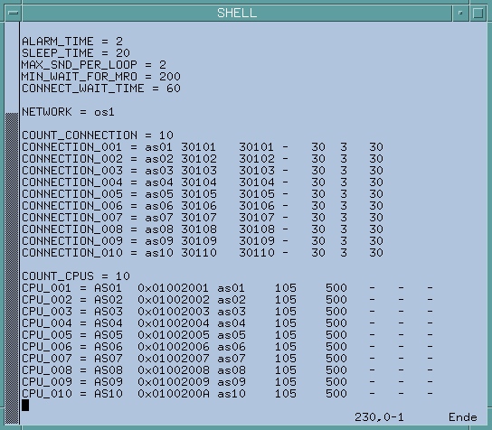

SICLIMAT X
Scenario
You want to integrate SICLIMAT X into the management platform.
For background information on engineering SICLIMAT X, see the reference section.
Prerequisites
- The latest building service pack is installed (SP101 Bausteine + Typicals).
- The exporter tool for the SICLIMAT X integration is delivered with the SP501: Export Tools for Desigo CC V3.0 Migration Service Pack. After the installation, the executables are located in the system directories. The export can be executed with user sicx only.
- The configuration settings of the CPUsare checked.
NOTE: CPU names must be unique in the PCC configuration files ($SICX_CONFIG/pccS7x.cf). For example, AS01, AS02, and so on.
- EPT run is checked.
- PG-Path is checked.
- Hierarchy is checked.
Overview

To speed configuration, make sure the Desigo CC Transaction Mode is set to Simple or the Automatic Switch of Transaction Mode is set to True.
The automatic switch setting is recommended. Without it, to re-enable the logs, you need to set the Transaction Mode to Logging at the end of the configuration procedure.